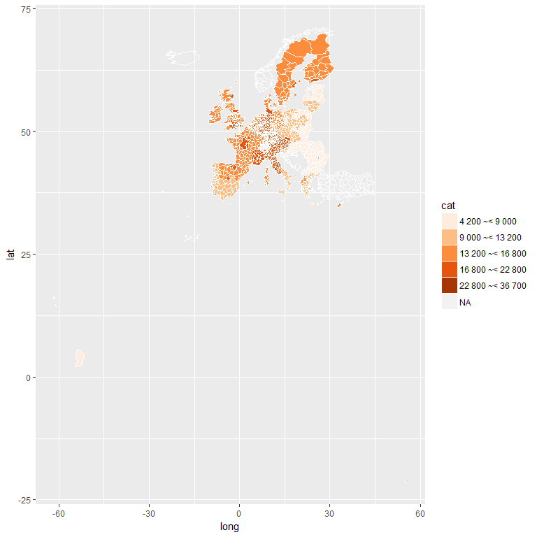

Eurostat R tools
2017-03-07
R Tools for Eurostat Open Data
This rOpenGov R package provides tools to access Eurostat database. For contact information and source code, see the README.
Installation
Release version (CRAN):
install.packages("eurostat")Development version (Github):
library(devtools)
install_github("ropengov/eurostat")Overall, the eurostat package includes the following functions:
Finding data
Function get_eurostat_toc() downloads a table of contents of eurostat datasets. The values in column ‘code’ should be used to download a selected dataset.
# Load the package
library(eurostat)
library(rvest)
# Get Eurostat data listing
toc <- get_eurostat_toc()
# Check the first items
library(knitr)
kable(head(toc))| title | code | type | last update of data | last table structure change | data start | data end | values |
|---|---|---|---|---|---|---|---|
| Database by themes | data | folder | NA | NA | NA | NA | NA |
| General and regional statistics | general | folder | NA | NA | NA | NA | NA |
| European and national indicators for short-term analysis | euroind | folder | NA | NA | NA | NA | NA |
| Business and consumer surveys (source: DG ECFIN) | ei_bcs | folder | NA | NA | NA | NA | NA |
| Consumer surveys (source: DG ECFIN) | ei_bcs_cs | folder | NA | NA | NA | NA | NA |
| Consumers - monthly data | ei_bsco_m | dataset | 27.02.2017 | 27.02.2017 | 1980M01 | 2017M02 | NA |
With search_eurostat() you can search the table of contents for particular patterns, e.g. all datasets related to passenger transport. The kable function to produces nice markdown output. Note that with the type argument of this function you could restrict the search to for instance datasets or tables.
# info about passengers
kable(head(search_eurostat("passenger transport")))| title | code | type | last update of data | last table structure change | data start | data end | values |
|---|---|---|---|---|---|---|---|
| Volume of passenger transport relative to GDP | tran_hv_pstra | dataset | 03.08.2016 | 03.08.2016 | 2000 | 2014 | NA |
| Modal split of passenger transport | tran_hv_psmod | dataset | 03.08.2016 | 02.08.2016 | 1990 | 2014 | NA |
| Railway transport - Total annual passenger transport (1 000 pass., million pkm) | rail_pa_total | dataset | 27.02.2017 | 08.11.2016 | 2004 | 2015 | NA |
| International railway passenger transport from the reporting country to the country of disembarkation (1 000 passengers) | rail_pa_intgong | dataset | 27.02.2017 | 21.09.2016 | 2002 | 2015 | NA |
| International railway passenger transport from the country of embarkation to the reporting country (1 000 passengers) | rail_pa_intcmng | dataset | 27.02.2017 | 26.05.2016 | 2002 | 2015 | NA |
| Air passenger transport by reporting country | avia_paoc | dataset | 19.12.2016 | 19.12.2016 | 1993 | 2016Q3 | NA |
Codes for the dataset can be searched also from the Eurostat database. The Eurostat database gives codes in the Data Navigation Tree after every dataset in parenthesis.
Downloading data
The package supports two of the Eurostats download methods: the bulk download facility and the Web Services’ JSON API. The bulk download facility is the fastest method to download whole datasets. It is also often the only way as the JSON API has limitation of maximum 50 sub-indicators at a time and whole datasets usually exceeds that. To download only a small section of the dataset the JSON API is faster, as it allows to make a data selection before downloading.
A user does not usually have to bother with methods, as both are used via main function get_eurostat(). If only the table id is given, the whole table is downloaded from the bulk download facility. If also filters are defined the JSON API is used.
Here an example of indicator ‘Modal split of passenger transport’. This is the percentage share of each mode of transport in total inland transport, expressed in passenger-kilometres (pkm) based on transport by passenger cars, buses and coaches, and trains. All data should be based on movements on national territory, regardless of the nationality of the vehicle. However, the data collection is not harmonized at the EU level.
Pick and print the id of the data set to download:
# For the original data, see
# http://ec.europa.eu/eurostat/tgm/table.do?tab=table&init=1&plugin=1&language=en&pcode=tsdtr210
id <- search_eurostat("Modal split of passenger transport",
type = "table")$code[1]
print(id)[1] “tsdtr210”
Get the whole corresponding table. As the table is annual data, it is more convient to use a numeric time variable than use the default date format:
dat <- get_eurostat(id, time_format = "num")Investigate the structure of the downloaded data set:
str(dat)## Classes 'tbl_df', 'tbl' and 'data.frame': 2326 obs. of 5 variables:
## $ unit : Factor w/ 1 level "PC": 1 1 1 1 1 1 1 1 1 1 ...
## $ vehicle: Factor w/ 3 levels "BUS_TOT","CAR",..: 1 1 1 1 1 1 1 1 1 1 ...
## $ geo : Factor w/ 35 levels "AT","BE","CH",..: 1 2 3 4 5 6 7 8 9 10 ...
## $ time : num 1990 1990 1990 1990 1990 1990 1990 1990 1990 1990 ...
## $ values : num 11 10.6 3.7 9.1 11.3 32.4 14.9 13.5 6 24.8 ...kable(head(dat))| unit | vehicle | geo | time | values |
|---|---|---|---|---|
| PC | BUS_TOT | AT | 1990 | 11.0 |
| PC | BUS_TOT | BE | 1990 | 10.6 |
| PC | BUS_TOT | CH | 1990 | 3.7 |
| PC | BUS_TOT | DE | 1990 | 9.1 |
| PC | BUS_TOT | DK | 1990 | 11.3 |
| PC | BUS_TOT | EL | 1990 | 32.4 |
Or you can get only a part of the dataset by defining filters argument. It should be named list, where names corresponds to variable names (lower case) and values are vectors of codes corresponding desidered series (upper case). For time variable, in addition to a time, also a sinceTimePeriod and a lastTimePeriod can be used.
dat2 <- get_eurostat(id, filters = list(geo = c("EU28", "FI"), lastTimePeriod=1), time_format = "num")
kable(dat2)Replacing codes with labels
By default variables are returned as Eurostat codes, but to get human-readable labels instead, use a type = "label" argument.
datl2 <- get_eurostat(id, filters = list(geo = c("EU28", "FI"),
lastTimePeriod = 1),
type = "label", time_format = "num")
kable(head(datl2))Eurostat codes in the downloaded data set can be replaced with human-readable labels from the Eurostat dictionaries with the label_eurostat() function.
datl <- label_eurostat(dat)
kable(head(datl))| unit | vehicle | geo | time | values |
|---|---|---|---|---|
| Percentage | Motor coaches, buses and trolley buses | Austria | 1990 | 11.0 |
| Percentage | Motor coaches, buses and trolley buses | Belgium | 1990 | 10.6 |
| Percentage | Motor coaches, buses and trolley buses | Switzerland | 1990 | 3.7 |
| Percentage | Motor coaches, buses and trolley buses | Germany (until 1990 former territory of the FRG) | 1990 | 9.1 |
| Percentage | Motor coaches, buses and trolley buses | Denmark | 1990 | 11.3 |
| Percentage | Motor coaches, buses and trolley buses | Greece | 1990 | 32.4 |
The label_eurostat() allows conversion of individual variable vectors or variable names as well.
label_eurostat_vars(names(datl))Vehicle information has 3 levels. You can check them now with:
levels(datl$vehicle)Selecting and modifying data
EFTA, Eurozone, EU and EU candidate countries
To facilitate smooth visualization of standard European geographic areas, the package provides ready-made lists of the country codes used in the eurostat database for EFTA (efta_countries), Euro area (ea_countries), EU (eu_countries) and EU candidate countries (eu_candidate_countries). These can be used to select specific groups of countries for closer investigation. For conversions with other standard country coding systems, see the countrycode R package. To retrieve the country code list for EFTA, for instance, use:
data(efta_countries)
kable(efta_countries)| code | name |
|---|---|
| IS | Iceland |
| LI | Liechtenstein |
| NO | Norway |
| CH | Switzerland |
EU data from 2012 in all vehicles:
dat_eu12 <- subset(datl, geo == "European Union (28 countries)" & time == 2012)
kable(dat_eu12, row.names = FALSE)| unit | vehicle | geo | time | values |
|---|---|---|---|---|
| Percentage | Motor coaches, buses and trolley buses | European Union (28 countries) | 2012 | 9.3 |
| Percentage | Passenger cars | European Union (28 countries) | 2012 | 83.0 |
| Percentage | Trains | European Union (28 countries) | 2012 | 7.7 |
EU data from 2000 - 2012 with vehicle types as variables:
Reshaping the data is best done with spread() in tidyr.
library("tidyr")
dat_eu_0012 <- subset(dat, geo == "EU28" & time %in% 2000:2012)
dat_eu_0012_wide <- spread(dat_eu_0012, vehicle, values)
kable(subset(dat_eu_0012_wide, select = -geo), row.names = FALSE)| unit | time | BUS_TOT | CAR | TRN |
|---|---|---|---|---|
| PC | 2000 | 10.4 | 82.4 | 7.2 |
| PC | 2001 | 10.2 | 82.7 | 7.1 |
| PC | 2002 | 9.9 | 83.3 | 6.8 |
| PC | 2003 | 9.9 | 83.5 | 6.7 |
| PC | 2004 | 9.8 | 83.4 | 6.8 |
| PC | 2005 | 9.9 | 83.2 | 6.9 |
| PC | 2006 | 9.7 | 83.2 | 7.1 |
| PC | 2007 | 9.8 | 83.1 | 7.2 |
| PC | 2008 | 9.7 | 83.1 | 7.3 |
| PC | 2009 | 9.2 | 83.7 | 7.1 |
| PC | 2010 | 9.2 | 83.6 | 7.2 |
| PC | 2011 | 9.2 | 83.4 | 7.3 |
| PC | 2012 | 9.3 | 83.0 | 7.7 |
Train passengers for selected EU countries in 2000 - 2012
dat_trains <- subset(datl, geo %in% c("Austria", "Belgium", "Finland", "Sweden")
& time %in% 2000:2012
& vehicle == "Trains")
dat_trains_wide <- spread(dat_trains, geo, values)
kable(subset(dat_trains_wide, select = -vehicle), row.names = FALSE)| unit | time | Austria | Belgium | Finland | Sweden |
|---|---|---|---|---|---|
| Percentage | 2000 | 9.7 | 6.3 | 5.1 | 7.5 |
| Percentage | 2001 | 9.7 | 6.4 | 4.8 | 7.9 |
| Percentage | 2002 | 9.7 | 6.5 | 4.8 | 7.8 |
| Percentage | 2003 | 9.5 | 6.5 | 4.7 | 7.7 |
| Percentage | 2004 | 9.4 | 7.1 | 4.7 | 7.5 |
| Percentage | 2005 | 9.8 | 6.6 | 4.8 | 7.7 |
| Percentage | 2006 | 10.0 | 6.9 | 4.8 | 8.3 |
| Percentage | 2007 | 10.0 | 7.1 | 5.0 | 8.7 |
| Percentage | 2008 | 11.1 | 7.5 | 5.4 | 9.4 |
| Percentage | 2009 | 11.1 | 7.5 | 5.1 | 9.5 |
| Percentage | 2010 | 11.0 | 7.7 | 5.2 | 9.4 |
| Percentage | 2011 | 11.3 | 7.7 | 5.0 | 8.8 |
| Percentage | 2012 | 11.8 | 7.8 | 5.3 | 9.1 |
Visualization
Visualizing train passenger data with ggplot2:
library(ggplot2)
p <- ggplot(dat_trains, aes(x = time, y = values, colour = geo))
p <- p + geom_line()
print(p)
Triangle plot is handy for visualizing data sets with three variables. For instance, the passenger transport distributions across three vehicle types in 2012 for all countries where data is available:
library(tidyr)
# Download and modify the transport data
transports <- spread(subset(dat, time == 2012, select = c(geo, vehicle, values)), vehicle, values)
# Remove countries with missing data
transports <- na.omit(transports)
# Use triangle plot to visualize vehicle distributions:
library(plotrix)
triax.plot(transports[, -1], show.grid = TRUE,
label.points = TRUE, point.labels = transports$geo,
pch = 19)
Maps
Disposable income of private households by NUTS 2 regions at 1:60mln resolution using ggplot2
library(eurostat)
library(dplyr)
library(ggplot2)
# Data from Eurostat
eurostat::get_eurostat("tgs00026", time_format = "raw") %>%
# subset to have only a single row per geo
dplyr::filter(time == 2010, nchar(as.character(geo)) == 4) %>%
# categorise
dplyr::mutate(cat = cut_to_classes(values, n = 5)) %>%
# merge with geodata
merge_eurostat_geodata(data=.,geocolumn="geo",resolution = "60", output_class = "df", all_regions = TRUE) %>%
# plot map
ggplot(data=., aes(x=long,y=lat,group=group)) +
geom_polygon(aes(fill=cat),color="white", size=.1) +
scale_fill_brewer(palette ="Oranges")## Reading cache file /tmp/RtmpJsgvGP/eurostat/tgs00026_raw_code_TF.rds## Table tgs00026 read from cache file: /tmp/RtmpJsgvGP/eurostat/tgs00026_raw_code_TF.rds##
## COPYRIGHT NOTICE
##
## When data downloaded from this page
## <http://ec.europa.eu/eurostat/web/gisco/geodata/reference-data/administrative-units-statistical-units>
## is used in any printed or electronic publication,
## in addition to any other provisions
## applicable to the whole Eurostat website,
## data source will have to be acknowledged
## in the legend of the map and
## in the introductory page of the publication
## with the following copyright notice:
##
## - EN: (C) EuroGeographics for the administrative boundaries
## - FR: (C) EuroGeographics pour les limites administratives
## - DE: (C) EuroGeographics bezuglich der Verwaltungsgrenzen
##
## For publications in languages other than
## English, French or German,
## the translation of the copyright notice
## in the language of the publication shall be used.
##
## If you intend to use the data commercially,
## please contact EuroGeographics for
## information regarding their licence agreements.
## ## Reading cache file /tmp/RtmpJsgvGP/eurostat/df60.RData## data_frame at resolution 1: 60 read from cache file: /tmp/RtmpJsgvGP/eurostat/df60.RData
Disposable income of private households by NUTS 2 regions in Poland with labels at 1:1mln resolution using ggplot2
library(eurostat)
library(dplyr)
library(ggplot2)
library(RColorBrewer)
# Downloading and manipulating the tabular data
df <- get_eurostat("tgs00026", time_format = "raw") %>%
# subsetting to year 2005 and NUTS-3 level
dplyr::filter(time == 2005, nchar(as.character(geo)) == 4, grepl("PL",geo)) %>%
# label the single geo column
mutate(label = label_eurostat(.)[["geo"]],
cat = cut_to_classes(values)) %>%
# merge with geodata
merge_eurostat_geodata(data=.,geocolumn="geo",resolution = "01", all_regions = FALSE, output_class="df")## Reading cache file /tmp/RtmpJsgvGP/eurostat/tgs00026_raw_code_TF.rds## Table tgs00026 read from cache file: /tmp/RtmpJsgvGP/eurostat/tgs00026_raw_code_TF.rds##
## COPYRIGHT NOTICE
##
## When data downloaded from this page
## <http://ec.europa.eu/eurostat/web/gisco/geodata/reference-data/administrative-units-statistical-units>
## is used in any printed or electronic publication,
## in addition to any other provisions
## applicable to the whole Eurostat website,
## data source will have to be acknowledged
## in the legend of the map and
## in the introductory page of the publication
## with the following copyright notice:
##
## - EN: (C) EuroGeographics for the administrative boundaries
## - FR: (C) EuroGeographics pour les limites administratives
## - DE: (C) EuroGeographics bezuglich der Verwaltungsgrenzen
##
## For publications in languages other than
## English, French or German,
## the translation of the copyright notice
## in the language of the publication shall be used.
##
## If you intend to use the data commercially,
## please contact EuroGeographics for
## information regarding their licence agreements.
## ## data_frame at resolution 1: 01 cached at: /tmp/RtmpJsgvGP/eurostat/df01.RData# plot map
p <- ggplot(data=df, aes(long,lat,group=group))
p <- p + geom_polygon(aes(fill = cat),colour="white",size=.8)
p <- p + scale_fill_manual(values=brewer.pal(n = 5, name = "Oranges"))
p <- p + geom_label(data=df %>% group_by(label,values,cat) %>% summarise(long = mean(long),
lat = mean(lat)),
aes(long, lat, label = paste(label,"\n",values,"€"), group=label,fill=cat),
size=3.5, color="white", fontface="bold", lineheight=.8, show.legend=FALSE)
p <- p + labs(title = paste0("Disposable household incomes in 2005"))
p <- p + guides(fill = guide_legend(title = "EUR per Year",title.position = "top", title.hjust=0))
p
Disposable income of private households by NUTS 2 regions at 1:60mln resolution using spplot
library(sp)
library(eurostat)
library(dplyr)
dat <- get_eurostat("tgs00026", time_format = "raw") %>%
# subsetting to year 2005 and NUTS-3 level
dplyr::filter(time == 2005, nchar(as.character(geo)) == 4) %>%
# classifying the values the variable
dplyr::mutate(cat = cut_to_classes(values)) %>%
# merge Eurostat data with geodata from Cisco
merge_eurostat_geodata(data=.,geocolumn="geo",resolution = "10", output_class ="spdf", all_regions=FALSE) ## Reading cache file /tmp/RtmpJsgvGP/eurostat/tgs00026_raw_code_TF.rds## Table tgs00026 read from cache file: /tmp/RtmpJsgvGP/eurostat/tgs00026_raw_code_TF.rds##
## COPYRIGHT NOTICE
##
## When data downloaded from this page
## <http://ec.europa.eu/eurostat/web/gisco/geodata/reference-data/administrative-units-statistical-units>
## is used in any printed or electronic publication,
## in addition to any other provisions
## applicable to the whole Eurostat website,
## data source will have to be acknowledged
## in the legend of the map and
## in the introductory page of the publication
## with the following copyright notice:
##
## - EN: (C) EuroGeographics for the administrative boundaries
## - FR: (C) EuroGeographics pour les limites administratives
## - DE: (C) EuroGeographics bezuglich der Verwaltungsgrenzen
##
## For publications in languages other than
## English, French or German,
## the translation of the copyright notice
## in the language of the publication shall be used.
##
## If you intend to use the data commercially,
## please contact EuroGeographics for
## information regarding their licence agreements.
## ## SpatialPolygonDataFrame at resolution 1: 10 cached at: /tmp/RtmpJsgvGP/eurostat/spdf10.RData# plot map
sp::spplot(obj = dat, "cat", main = "Disposable household income",
xlim=c(-22,34), ylim=c(35,70),
col.regions = c("dim grey", brewer.pal(n = 5, name = "Oranges")),
col = "white", usePolypath = FALSE)
Version info
This tutorial was created with
sessionInfo()## R version 3.3.1 (2016-06-21)
## Platform: x86_64-pc-linux-gnu (64-bit)
## Running under: Ubuntu 16.10
##
## locale:
## [1] LC_CTYPE=en_US.UTF-8 LC_NUMERIC=C
## [3] LC_TIME=en_US.UTF-8 LC_COLLATE=en_US.UTF-8
## [5] LC_MONETARY=en_US.UTF-8 LC_MESSAGES=en_US.UTF-8
## [7] LC_PAPER=en_US.UTF-8 LC_NAME=C
## [9] LC_ADDRESS=C LC_TELEPHONE=C
## [11] LC_MEASUREMENT=en_US.UTF-8 LC_IDENTIFICATION=C
##
## attached base packages:
## [1] stats graphics grDevices utils datasets methods base
##
## other attached packages:
## [1] sp_1.2-3 RColorBrewer_1.1-2 rvest_0.3.2
## [4] xml2_1.1.1 ggplot2_2.2.1 plotrix_3.6-3
## [7] dplyr_0.5.0 tidyr_0.6.1 xtable_1.8-2
## [10] eurostat_2.3.11 pkgdown_0.1.0.9000 knitr_1.15.1
## [13] devtools_1.12.0.9000
##
## loaded via a namespace (and not attached):
## [1] purrr_0.2.2 lattice_0.20-34 tcltk_3.3.1
## [4] colorspace_1.3-2 testthat_1.0.2 htmltools_0.3.5
## [7] yaml_2.1.14 pkgbuild_0.0.0.9000 e1071_1.6-7
## [10] withr_1.0.2 DBI_0.5-1 plyr_1.8.4
## [13] stringr_1.2.0 munsell_0.4.3 commonmark_1.2
## [16] gtable_0.2.0 mapproj_1.2-4 evaluate_0.10
## [19] memoise_1.0.0 labeling_0.3 highlight_0.4.7
## [22] Cairo_1.5-9 curl_2.3 class_7.3-14
## [25] highr_0.6 Rcpp_0.12.9.4 readr_1.0.0
## [28] backports_1.0.5 scales_0.4.1 classInt_0.1-23
## [31] desc_1.1.0 pkgload_0.0.0.9000 jsonlite_1.3
## [34] digest_0.6.12 stringi_1.1.3 ggrepel_0.6.5
## [37] grid_3.3.1 rprojroot_1.2 rgdal_1.2-4
## [40] tools_3.3.1 maps_3.1.1 magrittr_1.5
## [43] lazyeval_0.2.0 tibble_1.2 crayon_1.3.2
## [46] whisker_0.4 assertthat_0.1 rmarkdown_1.3.9004
## [49] roxygen2_6.0.1 httr_1.2.1 R6_2.2.0